<!DOCTYPE html>
<html lang="en">
<head>
  <meta charset="UTF-8">
  <meta name="viewport" content="width=device-width, initial-scale=1.0">

  <meta http-equiv="X-UA-Compatible" content="ie=edge">

  <meta name="copyright" content="MACode ID, https://macodeid.com/">

  <title>Aprende Chapantongo</title>

  <link rel="stylesheet" href="../assets/css/maicons.css">

  <link rel="stylesheet" href="../assets/css/bootstrap.css">

  <link rel="stylesheet" href="../assets/vendor/animate/animate.css">

  <link rel="stylesheet" href="../assets/css/theme.css">

</head>
<body>

  <!-- Back to top button -->
  <div class="back-to-top"></div>

  <header>
    <nav class="navbar navbar-expand-lg navbar-light bg-white sticky" data-offset="500">
      <div class="container">
        <a href="#" class="navbar-brand">Aprende<span class="text-primary">Chapantongo</span></a>

      </div>
    </nav>

    <div class="container">
      <div class="page-banner home-banner">
        <div class="row align-items-center flex-wrap-reverse h-100">
          <div class="col-md-6 py-5 wow fadeInLeft">
            <h1 class="mb-4">Java&nbsp; - Clases&nbsp; &nbsp; &nbsp;&nbsp;</h1>
            <p class="text-lg text-grey mb-5">Aprende uno de los lenguajes de programacion más populares del mercado.&nbsp; &nbsp; &nbsp; &nbsp; &nbsp; &nbsp; &nbsp; &nbsp;</p>
            <a href="#start" class="btn btn-primary btn-split">Comenzemos 
            <div class="fab"><span class="mai-play"></span></div></a>
          </div>
          <div class="col-md-6 py-5 wow zoomIn">
            <div class="img-fluid text-center"> </div>
          </div>
        </div>
      </div>
    </div>
  </header>

  <div class="page-section" id="about">
    <div class="container">
      <div class="row align-items-center">
        <div class="col-lg-6 py-3 wow fadeInUp">
          <span class="subhead">Conoce Java</span>
          <h2 class="title-section">Introduccion&nbsp;</h2>
          <div class="divider"></div>

          <p class="text-justify">Las clases son la piedra angular de los lenguaje de programaci´on orientados a objetos (POO). Las clases son abstracciones de entidades de la realidad que sirven
como plantillas para la creaci´on de ejemplares de la clase. A estos ejemplares en
POO se les llama objetos o instancias de la clase. El proceso de abstraccion depende del contexto en el que se utilizar´an los ejemplares, es decir, no es lo mismo
abstraer la entidad del mundo real Persona para utilizarla en una aplicacion
de gestion de los clientes de una clınica, que para utilizarla en una aplicacion
de seguros o de banca</p>
        </div>
		  
		  
		 <div class="col-lg-6 py-3 wow fadeInRight">
          <div class="img-fluid py-3 text-center">
			<div class="col-lg-6 py-3 wow fadeInUp">
          <h2 class="title-section">Definicion de una clase</h2>

          <p class="text-justify">Supongamos que queremos programar una aplicaci´on de agenda telef´onica. El
objetivo de nuestra agenda telef´onica es gestionar una serie de contactos. Cada
uno de estos contactos representa a una Persona. Dicho de otro modo cada
uno de los contactos de la agenda est´a creado a partir de la misma plantilla
Persona, que es la abstracci´on de una persona del mundo real en el contexto de
la aplicaci´on de la agenda telef´onica.
¿Qu´e necesitamos especificar para crear un objeto o ejemplar de la clase
Persona? Cada uno de los objetos creados a partir de esta clase contendr´a una
serie de valores que lo identifican, como el nombre y los apellidos del contacto
y su n´umero de tel´efono. El conjunto de todos los valores de un objeto va a
determinar su estado en un momento concreto. Por otro lado, sobre cada uno de
los objetos vamos a poder llevar a cabo un conjunto de operaciones definidas en
la clase. Volviendo al ejemplo de la agenda telef´onica, cada una de las ✭✭Persona✮✮
de la agenda va a tener una serie de datos de inter´es, que pueden o no variar
a lo largo del tiempo (un contacto de mi agenda puede cambiar de n´umero de
tel´efono, pero no es probable que cambie de apellidos), y me va a ofrecer una
serie de operaciones que puedo realizar sobre ella, como por ejemplo consultar
su nombre.</p>
            </div>
          </div>
        </div>
		  
		  <div class="col-lg-6 py-3 wow fadeInRight">
          <div class="img-fluid py-3 text-center">
            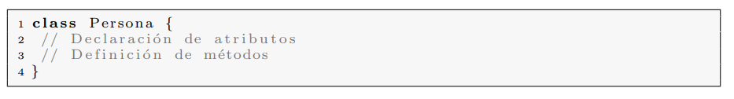
			<div class="col-lg-6 py-3 wow fadeInUp">
          <h2 class="title-section">MIEMBROS DE UNA CLASE</h2>

          <p class="text-justify"></p>
            </div>
          </div>
        </div>
		  
		  <div class="col-lg-6 py-3 wow fadeInRight">
          <div class="img-fluid py-3 text-center">
            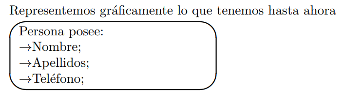
			<div class="col-lg-6 py-3 wow fadeInUp">
          <h2 class="title-section">Atributos de una clase</h2>

          <p class="text-justify">Ahora que ya sabemos que debemos abstraer una ✭✭Persona✮✮ del mundo real
en el contexto de nuestra aplicaci´on la siguiente pregunta es: ¿Cuales son las
caracter´ısticas, o datos, de una persona relevantes en el contexto de una agenda
telef´onica? Sin duda uno de estos datos es el n´umero de tel´efono de la persona; cada contacto de mi agenda tiene, de manera simplificada, un n´umero de
tel´efono. ¿Qu´e otros datos pueden ser de inter´es almacenar en una agenda telef´onica?, parece evidente que, al menos, el nombre y los apellidos de cada uno
de los contactos.</p>
            </div>
          </div>
        </div>
		  
		  <div class="col-lg-6 py-3 wow fadeInRight">
          <div class="img-fluid py-3 text-center">
            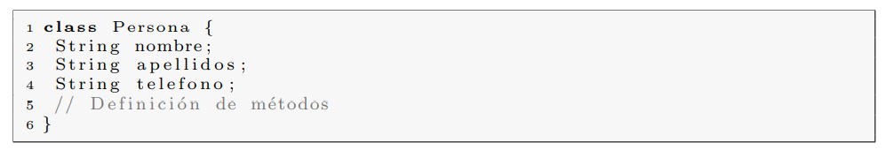
			<div class="col-lg-6 py-3 wow fadeInUp">
          <h2 class="title-section">Los atributos los declararemos de este modo</h2>

          <p class="text-justify">Fıjate que, al escribir el nombre de la clase hemos empezado la palabra
por una letra may´uscula, y que al empezar el nombre de un atributo lo hemos
empezado por min´uscula. Esta es una convenci´on de codificaci´on en Java que
conviene seguir puesto que est´a ampliamente extendida entre los desarrolladores
Java. Veremos m´as reglas de convenci´on en la Secci´on 2.9. F´ıjate tambi´en que
hemos definido cada atributo en un l´ınea distinta y que cada l´ınea acaba con el
caracter ;.
</p>
            </div>
          </div>
        </div>
		  
		  <div class="col-lg-6 py-3 wow fadeInRight">
          <div class="img-fluid py-3 text-center">
			<div class="col-lg-6 py-3 wow fadeInUp">
          <h2 class="title-section">Reglas de convencion</h2>

          <p class="text-justify">Seg´un las reglas de convenci´on m´as extendidas en Java, al definir una clase,
el nombre de la clase se debe escribir con la primera letra en may´uscula y los
nombres de los atributos y m´etodos deben empezar por una letra en min´uscula.
Si estos nombres est´an formados por m´as de una palabra, la segunda y siguientes palabras que constituyen el nombre se escriben con su primera letra en
may´uscula. Por ejemplo: numeroTelefono. </p>
            </div>
          </div>
        </div>
		  
		  <div class="col-lg-6 py-3 wow fadeInRight">
          <div class="img-fluid py-3 text-center">
            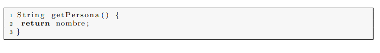
			<div class="col-lg-6 py-3 wow fadeInUp">
          <h2 class="title-section">Metodos de una clase.</h2>

          <p class="text-justify">Una vez hemos creado una instancia de la clase Persona, ¿C´omo podemos recuperar a partir de ella su nombre?, ¿C´omo podemos recuperar el nombre que
almacenamos en un contacto de nuestra agenda?.
Una posibilidad es simplemente leer el valor del atributo, pero como veremos
en la secci´on 2.5 el acceso directo a los atributos de una clase est´a desaconsejado.
La respuesta es: a trav´es de una llamada a un m´etodo que devuelva el nombre
del contacto. En el caso de la recuperaci´on del nombre, el tipo de dato de
retorno es una cadena class String.</p>
            </div>
          </div>
        </div>
		  <div class="col-lg-6 py-3 wow fadeInRight">
          <div class="img-fluid py-3 text-center">
			<div class="col-lg-6 py-3 wow fadeInUp">
          <h2 class="title-section">Sintaxis</h2>

          <p class="text-justify">La sintaxis de declaraci´on de un m´etodo es:
{modificadores} tipoRetorno nombre(tipo argumento1, tipo argumento2, ...) {
Bloque de definici´on del m´etodo;
}</p>
            </div>
          </div>
        </div>
		  
		  <div class="col-lg-6 py-3 wow fadeInRight">
          <div class="img-fluid py-3 text-center">
            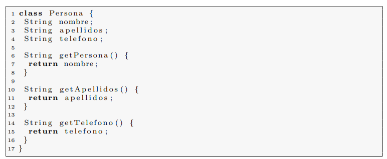
			<div class="col-lg-6 py-3 wow fadeInUp">
          <h2 class="title-section">MIEMBROS DE UNA CLASE</h2>

          <p class="text-justify">-. La definici´on del m´etodo va dentro de las llaves .

-Para devolver un valor utilizamos la palabra reservada return.

Como ves, muchos conceptos nuevos en tan s´olo tres l´ıneas de c´odigo. Y una
nueva convenci´on de codificaci´on, si un m´etodo devuelve el valor de un atributo
empieza por la palabra inglesa get, de ah´ı que hayamos escrito getNombre().
Con lo que ya hemos visto, es sencillo escribir dos nuevos m´etodo que devuelvan los apellidos y el n´umero de tel´efono de una Persona</p>
            </div>
          </div>
        </div>
		  
		  <div class="col-lg-6 py-3 wow fadeInRight">
          <div class="img-fluid py-3 text-center">
            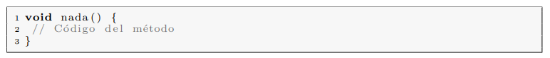
			<div class="col-lg-6 py-3 wow fadeInUp">
          <h2 class="title-section">Codigo de la clase Persona</h2>

          <p class="text-justify">De nuevo, f´ıjate que si un m´etodo no recibe argumentos su lista de argumentos est´a vac´ıa. Pero si un m´etodo no devuelve ning´un par´ametro, hay que
indicarlo expl´ıcitamente utilizando la palabra reservada void. Por ejemplo, el
siguiente metodo no devuelve ningun valor.</p>
            </div>
          </div>
        </div>
		  
		  <div class="col-lg-6 py-3 wow fadeInRight">
          <div class="img-fluid py-3 text-center">
            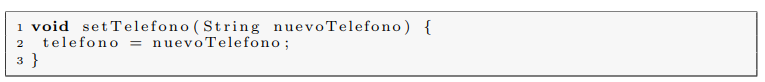
			<div class="col-lg-6 py-3 wow fadeInUp">
          <h2 class="title-section"></h2>

          <p class="text-justify">En muchas ocasiones resulta interesante poder modificar el valor de los atributos. Como ya hemos comentado anteriormente, un contacto de mi agenda
podr´ıa cambiar de n´umero de tel´efono, luego parece buena idea que la clase
Persona me proporcione un m´etodo que permita modificar el valor del atributo
telefono</p>
            </div>
          </div>
        </div>
		  
		  <div class="col-lg-6 py-3 wow fadeInRight">
          <div class="img-fluid py-3 text-center">
            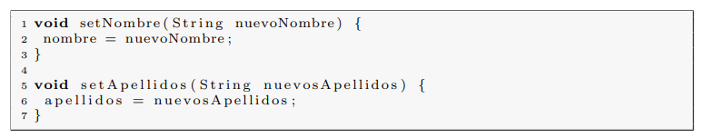
			<div class="col-lg-6 py-3 wow fadeInUp">
          <h2 class="title-section">Metodo para modificar el valor del tel´efono</h2>

          <p class="text-justify">Los m´etodos que modifican el valor de los atributos de una clase se nombran
empezando con la palabra inglesa set seguida por el nombre del atributo, cuya
primera letra se escribe en may´usculas.

De modo an´alogo, podemos a˜nadir a la clase Persona dos nuevos m´etodos
para poder modificar el valor de los atributos nombre y apellidos.</p>
            </div>
          </div>
        </div>
		  
		  
		  <div class="col-lg-6 py-3 wow fadeInRight">
          <div class="img-fluid py-3 text-center">
            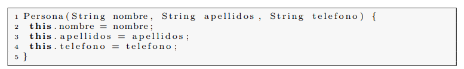
			<div class="col-lg-6 py-3 wow fadeInUp">
          <h2 class="title-section">Constructores</h2>

          <p class="text-justify">Para crear un ejemplar de una clase utilizamos m´etodos especiales llamados
constructores de la clase. En las siguientes l´ıneas de c´odigo se muestra c´omo se
define un constructor de la clase Persona</p>
            </div>
          </div>
        </div>
		  
		  
		  <div class="col-lg-6 py-3 wow fadeInRight">
          <div class="img-fluid py-3 text-center">
			<div class="col-lg-6 py-3 wow fadeInUp">
          <h2 class="title-section"></h2>

          <p class="text-justify">1. Un constructor es un m´etodo cuyo nombre coincide con el de la clase,
en nuestro caso el nombre del m´etodo es Persona que es precisamente el
nombre de la clase.&nbsp;</p>
          <p class="text-justify">2. Como cualquier otro m´etodo, tiene un lista de argumentos que en este
            caso no est´a vac´ıa, si no que indica que va a recibir tres argumentos y los
            tres de tipo String.&nbsp;</p>
          <p class="text-justify">3. F´ıjate que los nombres de los tres argumentos coinciden con los nombres de
los atributos; la clase tiene declarado un atributo de tipo String llamado
nombre y el primer argumento del constructor tambi´en se llama nombre
y es de tipo String. ¿Como resolvemos la ambig¨uedad entre el nombre
del atributo y el nombre del argumento?, utilizando la palabra reservada
this; si escribimos this.nombre estamos haciendo referencia al atributo,
si s´olo escribimos nombre, estamos haciendo referencia al argumento del
metodo.</p>
          <p class="text-justify">4. Un constructor no devuelve ningun valor de retorno, ya que estos m´etodos
especiales nos sirven para crear objetos.</p>
            </div>
          </div>
        </div>
		  <div class="col-lg-6 py-3 wow fadeInRight">
          <div class="img-fluid py-3 text-center">
            
			<div class="col-lg-6 py-3 wow fadeInUp">
          <h2 class="title-section">MIEMBROS DE UNA CLASE</h2>

          <p class="text-justify">Escribamos otro constructor para la clase Persona</p>
            </div>
          </div>
        </div>
		  <div class="col-lg-6 py-3 wow fadeInRight">
          <div class="img-fluid py-3 text-center">
            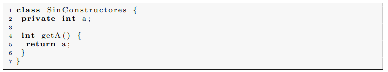
			<div class="col-lg-6 py-3 wow fadeInUp">
          <h2 class="title-section"></h2>

          <p class="text-justify">A este constructor tan particular se le llama Constructor por defecto y hablaremos m´as sobre ´el en el cap´ıtulo 3 dedicado a la herencia en Java. De momento
qu´edate con la idea de que es importante que tus clases definan el constructor
por defecto, de hecho, todas tus clases deber´ıan definirlo. Si tu clase no proporciona ning´un constructor, como en el caso del Listado 2.5, el compilador de
Java crea el constructor por defecto para la clase, de modo que puedas crear
instancias a partir de ella</p>
            </div>
          </div>
        </div>
		  
		  <div class="col-lg-6 py-3 wow fadeInRight">
          <div class="img-fluid py-3 text-center">
            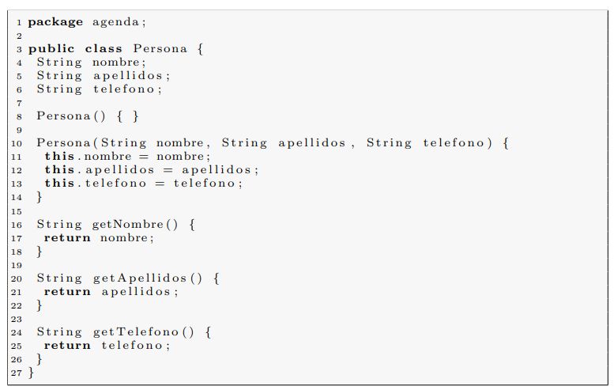
			<div class="col-lg-6 py-3 wow fadeInUp">
          <h2 class="title-section">Veamos todo el c´odigo que hemos escrito para la clase Persona:</h2>

          <p class="text-justify"></p>
            </div>
          </div>
        </div>
		  
		  <div class="col-lg-6 py-3 wow fadeInRight">
          <div class="img-fluid py-3 text-center">
            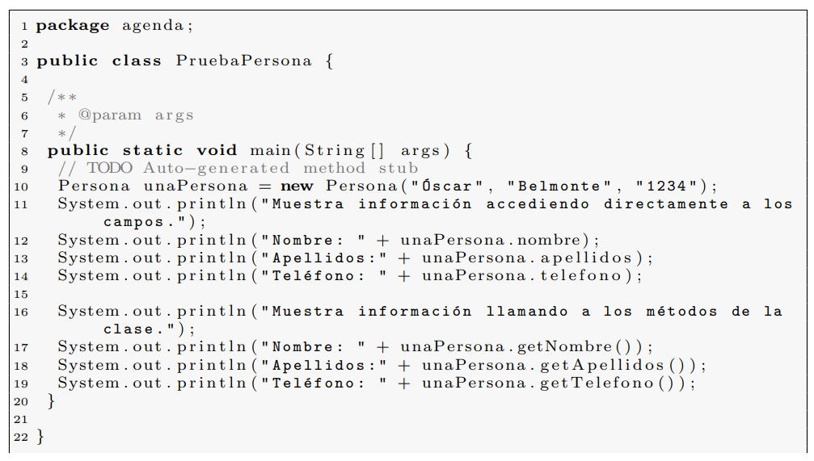
			<div class="col-lg-6 py-3 wow fadeInUp">
          <h2 class="title-section"></h2>

          <p class="text-justify">En el Listado 2.6 hemos agrupado los m´etodos get/set para cada uno de
los atributos, adem´as hemos modificado la definici´on de los m´etodos set para
30 CAP´ITULO 2. CLASES
deshacer la ambig¨uedad entre el nombre de los atributos y de los argumentos,
tal y como hemos hecho en el caso del constructor con argumentos.
Antes de pasar adelante, escribamos nuestra primera peque˜na aplicaci´on en
Java para probar todo lo que hemos visto hasta ahora. Vamos a utilizar para ello
el entorno integrado de desarrollo Eclipse, inicia pues esta aplicaci´on. Hay varias
opciones para crear un nuevo proyecto en Eclipse, a trav´es del men´u puedes
elegir File → New → Java Project, o bien puedes pulsar el bot´on de creaci´on
de proyectos. Eclipse te solicitar´a un nombre para el proyecto, introduce uno
adecuado (por ejemplo ✭✭AgendaTelefonica✮✮), y ya puedes pulsar directamente
la tecla Finish. Ver´as que en la columna izquierda de Eclipse, donde se muestra
la vista Package Explorer te aparece una carpeta con el mismo nombre que el
proyecto reci´en creado. Eclipse organiza los proyectos en carpetas, el c´odigo de
tu proyecto, ficheros de bibliotecas y recursos necesarios estar´an en la carpeta
del proyecto.
Para crear un nueva clase en Eclipse puedes hacerlo a trav´es del men´u File
→ New → Class, o bien pulsando directamente el bot´on de creaci´on de una
nueva clase. Se abrir´a una ventana de di´alogo solicit´andote un nombre para
la nueva clase y el paquete donde se incluir´a. Es muy recomendable que cada
clase est´e dentro de un paquete (veremos con m´as detalle el significado de los
paquetes en Java en la Secci´on 3.6). Seg´un las convenciones de Java, los nombres
de paquetes se escriben en min´uscula. Escribe, por ejemplo, para el nombre del
paquete agenda, y para el nombre de la clase Persona. Ver´as que se abre la
vista del editor de c´odigo en Eclipse y que si despliegas la carpeta de proyecto
te aparece el fichero de clase Persona.java. Escribe la definici´on de la clase
seg´un el Listado 2.6.
Lo siguiente que vamos a hacer es escribir una clase para probar nuestra clase
Persona, para ello crea en el proyecto una nueva clase y ll´amala PruebaPersona
y como nombre de paquete introduce agenda, y en el cuadro de di´alogo de creaci´on de la clase marca la casilla public static void main(String[] args),
con ello Eclipse crear´a de manera autom´atica el m´etodo principal main.</p>
            </div>
          </div>
        </div>
		  
		  <div class="col-lg-6 py-3 wow fadeInRight">
          <div class="img-fluid py-3 text-center">
			<div class="col-lg-6 py-3 wow fadeInUp">
          <h2 class="title-section">Codigo de la clase Principal</h2>

          <p class="text-justify">La clase Principal est´a repleta de novedades. Esta clase tiene un ´unico metodo public static void main(String[] args), este m´etodo es el punto de
entrada a la ejecuci´on de un programa Java. En las siguientes secciones veremos
el significado de todos los modificadores que tiene este m´etodo delante de su
nombre que es main. En la l´ınea n´umero 10, vemos c´omo se usa el operador new
para crear una instancia de la clase, escribimos tras new un constructor de la
clase, en este caso Persona("´Oscar", "Belmonte", "1234"),new utilizar´a el
constructor con tres argumentos de la clase Persona para crear una nueva instancia. F´ıjate que a la izquierda de new tenemos Persona unaPersona =, esto
indica que nos guardamos lo que el operador new devuelve en la variable de
tipo referencia a Persona que llamamos unaPersona, en las siguientes secciones
veremos con m´as detalle qu´e significa el concepto variable de tipo referencia, de
momento la idea es que, para poder usar la instancia a la Persona reci´en creada
utilizaremos la variable de referencia unaPersona.</p>
            </div>
          </div>
        </div>
		  
		  
		  <div class="col-lg-6 py-3 wow fadeInRight">
          <div class="img-fluid py-3 text-center">
            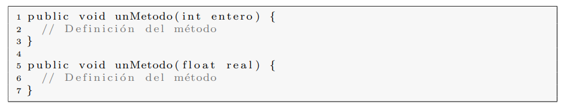
			<div class="col-lg-6 py-3 wow fadeInUp">
          <h2 class="title-section">Sobrecarga de m´etodos y constructores</h2>

          <p class="text-justify">Dos o m´as m´etodos pueden tener el mismo nombre siempre que su n´umero
de argumentos sea distinto. En caso de que los dos m´etodos tengan el mismo
n´umero de argumentos, ser´an distintos si al menos un tipo de sus argumentos
es distinto. Por ejemplo en el siguiente Listado los dos m´etodos unMetodo est´an
sobrecargados y son distintos.</p>
            </div>
          </div>
        </div>
		  
		  <div class="col-lg-6 py-3 wow fadeInRight">
          <div class="img-fluid py-3 text-center">
			<div class="col-lg-6 py-3 wow fadeInUp">
          <h2 class="title-section"></h2>

          <p class="text-justify">De modo an´alogo, los constructores tambi´en pueden estar sobrecargados,
de hecho hemos sobrecargado el constructor de la clase Persona en el Listado
2.6, esta clase tiene dos constructores Persona() y Persona(String nombre,
String apellidos, String telefono).
Un detalle muy importante en la sobrecarga de m´etodos es que el tipo de
retorno no sirve para distinguir dos m´etodos. Si dos m´etodos tienen el mismo
n´umero de argumentos y sus tipos son los mismos, no los podremos sobrecargar
haciendo que el tipo de sus valores de retorno sean distintos.</p>
            </div>
          </div>
        </div>
		  
		  <div class="col-lg-6 py-3 wow fadeInRight">
          <div class="img-fluid py-3 text-center">
            
			<div class="col-lg-6 py-3 wow fadeInUp">
          <h2 class="title-section"></h2>

          <p class="text-justify">En el siguiente Listado se muestra un error al intentar sobrecargar dos m´etodos que se distinguen ´unicamente por su tipo de retorno.

Los dos m´etodos tienen el mismo nombre y ning´un argumento, el primero de
ellos no retorna nada void, y el segundo de ellos retorna un int. El compilador esincapaz de distinguirlos y devuelve un error que indica que estamos intentando
definir el mismo metodo dos veces.
Pero volvamos a Java y vemos qu´e significa el t´ermino tipo de dato referencia.</p>
            </div>
          </div>
        </div>
		  
		  <div class="col-lg-6 py-3 wow fadeInRight">
          <div class="img-fluid py-3 text-center">
            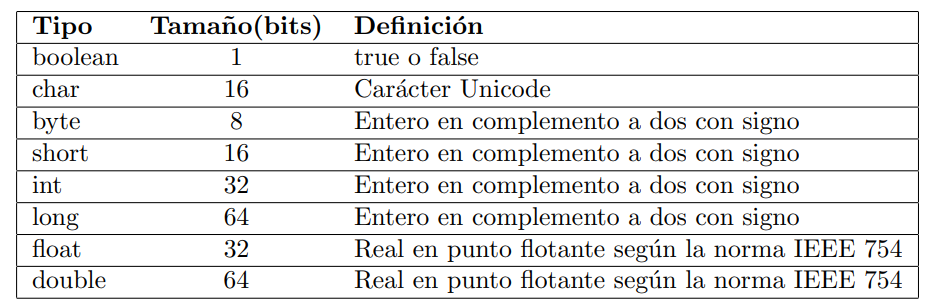
			<div class="col-lg-6 py-3 wow fadeInUp">
          <h2 class="title-section">Tipos de datos en Java</h2>

          <p class="text-justify">En Java existen dos grandes grupos de tipos de datos, los tipos de datos primitivos y los tipos de datos referencia.
Los tipos de datos primitivos sirven para representar tipos de datos tales
como n´umeros enteros, caracteres, n´umeros reales, booleanos, etc´etera. Se les
llama primitivos porque nos permiten manejar elementos de informaci´on b´asicos
como letras y n´umeros. Una variable de tipo primitivo nos permite almacenar
en ella un tipo primitivo como por ejemplo un valor num´erico.
Por otro lado, los tipos de datos referencia nos permiten indicar que vamos a
trabajar con instancias de clases, no con tipos primitivos. Una variable de tipo
referencia establece una conexi´on hacia un objeto, y a trav´es de esta conexi´on
podremos acceder a sus atributos y m´etodos.
Cuando hablamos de variables, es muy importante asimilar la diferencia entre variables de tipo primitivo y variables de tipo referencia. En una variable
de tipo primitivo podemos almacenar valores de tipo primitivo (n´umeros, caracteres); pero el las variables de tipo referencia no almacenamos valores son
la puerta de entrada hacia los objetos. Son los objetos, las instancias de clases,
las que almacenan informaci´on y me permiten trabajar con ellos a trav´es de
llamadas a sus m´etodos.</p>
            </div>
          </div>
        </div>
		  
		  <div class="col-lg-6 py-3 wow fadeInRight">
          <div class="img-fluid py-3 text-center">
            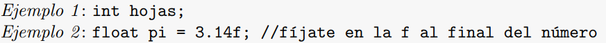
			<div class="col-lg-6 py-3 wow fadeInUp">
          <h2 class="title-section">Sintaxis</h2>

          <p class="text-justify">Las variables de tipo primitivo se declaran de este modo:
tipo nombre [ = valor inicial];</p>
            </div>
          </div>
        </div>
		  
		  
		  <div class="col-lg-6 py-3 wow fadeInRight">
          <div class="img-fluid py-3 text-center">
			<div class="col-lg-6 py-3 wow fadeInUp">
          <h2 class="title-section"></h2>

          <p class="text-justify">En m´ultiples ocasiones, nos interesa trabajar con m´as de un ´unico valor
de un determinado tipo, en vez de trabajar con una ´unica Persona queremos
trabajar con un grupo de personas. Veamos c´omo podemos declarar conjuntos
de elementos del mismo tipo en Java</p>
            </div>
          </div>
        </div>
		  
		  <div class="col-lg-6 py-3 wow fadeInRight">
          <div class="img-fluid py-3 text-center">
			<div class="col-lg-6 py-3 wow fadeInUp">
          <h2 class="title-section">Arrays de datos en Java</h2>

          <p class="text-justify">Hasta el momento, hemos aprendido c´omo declarar variables de tipos de datos
primitivos y de tipos de datos referencia. Esto nos sirve para crear una ´unica
variable que contendr´a bien un tipo de datos primitivo a una referencia a un
objeto, pero a veces nos interesa poder manejar conjuntos de elementos del
mismo tipo, por ejemplo, en alguna circunstancia nos puede interesar declarar
una variable con la que poder acceder a un grupo de 10 enteros o 100 objetos
de la clase Persona.
En Java utilizaremos arrays de elementos cuando necesitemos manejar m´as
de un elemento del mismo tipo. Para declarar un array en Java utilizamos los
corchetes seg´un la siguiente sintaxis:</p>
            </div>
          </div>
        </div>
		  
		  <div class="col-lg-6 py-3 wow fadeInRight">
          <div class="img-fluid py-3 text-center">
            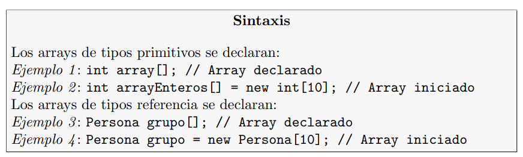
          </div>
        </div>
		  
		  
		  
		  <div class="col-lg-6 py-3 wow fadeInRight">
          <div class="img-fluid py-3 text-center">
            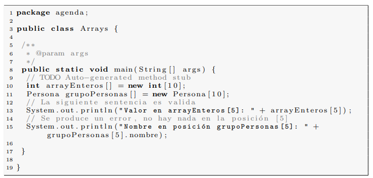
			<div class="col-lg-6 py-3 wow fadeInUp">
          <h2 class="title-section">TIPOS DE DATOS EN JAVA</h2>

          <p class="text-justify">Analic´emoslo. En el Ejemplo 2 del recuadro de sintaxis anterior se est´a definiendo un array capaz de albergar 10 enteros (con ´ındice 0 para el primer elemento e
´ındice 9 para el ´ultimo), dentro de cada una de las posiciones del array podemos
almacenar un entero.
En el caso del Ejemplo 4, estamos definiendo un array capaz de albergar 10
✭✭referencias✮✮ de tipo Persona. En este caso, lo que tenemos en cada una de las
posiciones del array no es un objeto de tipo Persona, si no una referencia a un
objeto de tipo Persona. Dicho de otro modo No se ha creado ning´un objeto
de la clase Persona, s´olo referencias a objetos de ese tipo.
La diferencia entre arrays de tipo primitivo y tipo referencia es muy importante. Mientras que en el caso de los arrays de tipo primitivo, una vez creados
ya tenemos disponible en cada una de sus posiciones espacio para albergar un
elemento del tipo correspondiente, en los arrays de tipo referencia no se ha
creado ninguna instancia de la clase correspondiente, lo ´unico que se ha creado es un conjunto de referencias que podremos conectar a objetos de la clase
correspondiente, y estos objetos los habremos creado en otro lugar de nuestro
programa.</p>
            </div>
          </div>
        </div>
		  
		  
		  
		  
		  
		  
      </div>
    </div> <!-- .container -->
  </div> <!-- .page-section -->
  
</body>
</html>